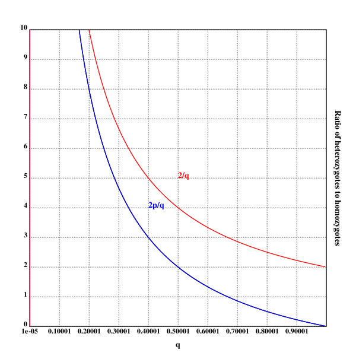
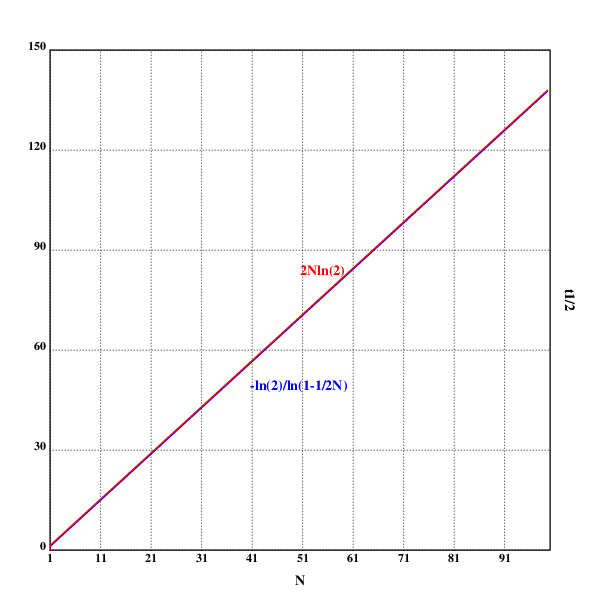
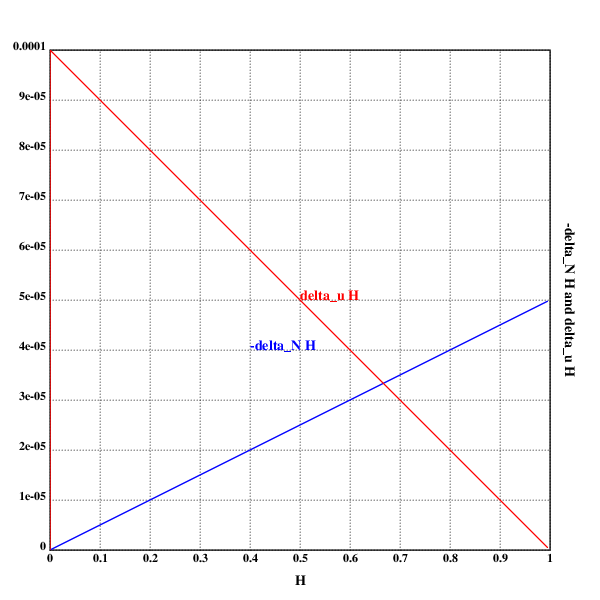

author: niplav, created: 2022-01-25, modified: 2022-02-23, language: english, status: in progress, importance: 2, confidence: likely
Some solutions to exercises in the book “Population Genetics” by John H. Gillespie. I did not simply copy out the solutions at the end of each chapter, and sometimes didn't even check the solutions against my own. Therefore, these might be faulty.
For three it would be $A_1A_1A_1, A_1A_1A_2, A_1A_2A_2, A_1A_2A_3, A_2A_2A_2, A_2A_2A_3, A_3A_3A_3$,
with 7 different genotypes.
For four it would be 32 different genotypes:
$A_1 A_1 A_1 A_1, A_1 A_1 A_1 A_2, A_1 A_1 A_1 A_3, A_1 A_1 A_1 A_4, A_1 A_1 A_2 A_2, A_1 A_1 A_2 A_3, A_1 A_1 A_2 A_4, A_1 A_1 A_3 A_3, A_1 A_1 A_3 A_4, A_1 A_1 A_4 A_4, A_1 A_2 A_2 A_2, A_1 A_2 A_2 A_3, A_1 A_2 A_2 A_4, A_1 A_2 A_3 A_4, A_1 A_2 A_4 A_4, A_1 A_3 A_4 A_4, A_1 A_4 A_4 A_4, A_2 A_2 A_2 A_2, A_2 A_2 A_2 A_3, A_2 A_2 A_2 A_4, A_2 A_2 A_3 A_3, A_2 A_2 A_3 A_4, A_2 A_2 A_4 A_4, A_2 A_3 A_3 A_3, A_2 A_3 A_3 A_4, A_2 A_3 A_4 A_4, A_2 A_4 A_4 A_4, A_3 A_3 A_3 A_3, A_3 A_3 A_3 A_4, A_3 A_3 A_4 A_4, A_3 A_4 A_4 A_4, A_4 A_4 A_4 A_4$
So apparently, per solution, this is wrong, because I assumed that $n$
different alleles resulted in a $n$ploid organism, which isn't the case.
For three alleles it would be $A_1 A_1, A_1 A_2, A_1 A_3, A_2 A_2, A_2 A_3, A_3 A_3$,
which is 6 different genotypes.
For four different alleles it would be 10 different genotypes:
$A_1 A_1,A_1 A_2,A_1 A_3,A_1 A_4,A_2 A_2,A_2 A_3,A_2 A_4,A_3 A_3,A_3 A_4,A_4 A_4$
The general formula is $\frac{n (n+1)}{2}$ different genotypes,
because it's just the upper half of the square again.
$0.0151+\frac{1}{2}0.0452+\frac{1}{2}0.0964=0.0859$$0.4247+\frac{1}{2}0.3343+\frac{1}{2}0.0964=0.64005$$0.0843+\frac{1}{2}0.3343+\frac{1}{2}0.0452=0.27405$Checking, these three do sum to 1: $0.0859+0.64005+0.27405=1$.
setrgb(0;0;0)
grid([0.00001 1 0.1];[0 10 1])
xtitle("q")
ytitle("Ratio of heterozygotes to homozygotes")
plot({(2*(1-x))%x})
setrgb(0;0;1)
plot({(2*(1-x))%x})
text(200;200;"2p/q")
setrgb(1;0;0)
plot({2%x})
text(250;250;"2/q")
draw()

Written in Lua, and generalizing to more than 2 alleles.
-- number of individuals
N=260
-- number of generations
n=20
-- initial frequencies of the alleles
p={0.2, 0.4, 0.1, 0.1, 0.15, 0.05}
alleles={}
for i=1, #p do
for j=1, math.floor(N*p[i]) do
alleles[#alleles+1]="a"..i
end
end
for i=1, n do
nalleles={}
for j=1, N/2 do
a=alleles[math.random(#alleles)]
nalleles[#nalleles+1]=a
nalleles[#nalleles+2]=a
end
alleles=nalleles
end
table.sort(alleles)
print(table.concat(alleles, ", "))
p2.5::.oc("p2.5.eps")
.tc(p2.5)
setrgb(0;0;0)
grid([1 100 10];[0 150 30])
xtitle("N")
ytitle("t½")
setrgb(0;0;1)
plot({-ln(2)%ln(1-1%2*x)})
text(200;160;"-ln(2)/ln(1-1/2N)")
setrgb(1;0;0)
plot({2*x*ln(2)})
text(250;275;"2Nln(2)")
draw()
.fl()
.cc(p2.5)

These are, in fact, two different graphs, but the approximation is good enough that it's not visible.
That would be $3*3000$ for one step (3 possible changes for every
nucleotides).
For two mutational steps, it would be $3^2*{3000 \choose 2}$ (3 possible
changes per chosen nucleotide, and two different nucleotides chosen from
the whole allele).
For $n$ mutational steps, it would be $3^n*{3000 \choose n}$.
(The actual code doesn't contain the unicode symbols since either Klong or Postscript can't deal with them. Sad.)
p2.9::.oc("p2.9.eps")
.tc(p2.9)
setrgb(0;0;0)
grid([0 1 0.1];[0 0.0001 0.00001])
xtitle("𝓗")
ytitle("-Δ_N𝓗 and Δᵤ𝓗")
N::10^4
u::5*10^-5
setrgb(0;0;1)
plot({(1%2*N)*x})
text(200;200;"-Δ_N𝓗")
setrgb(1;0;0)
plot({2*u*1-x})
text(250;250;"Δᵤ𝓗")
draw()
.fl()
.cc(p2.9)

Does the same thing fall out of the math?
Let's see:
At least the intersection does.